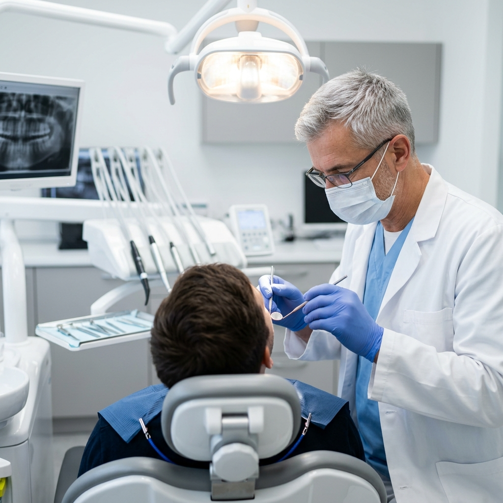
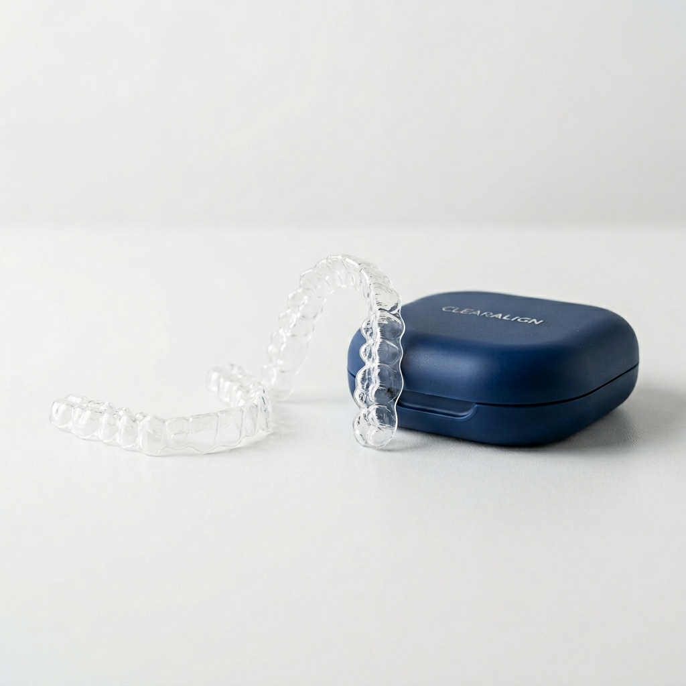
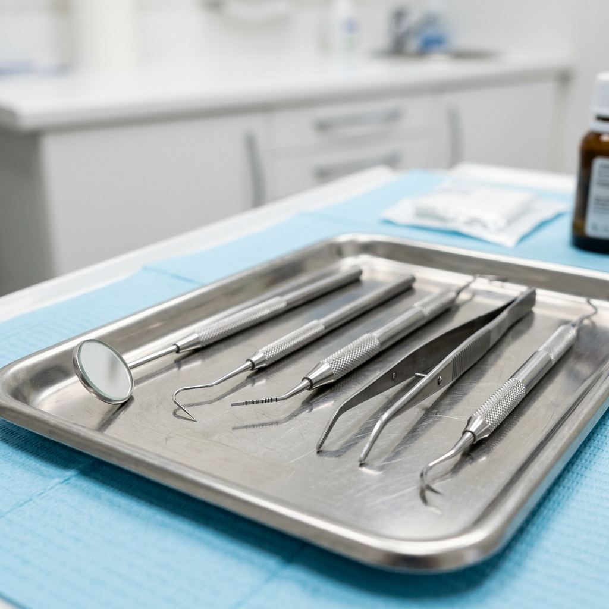
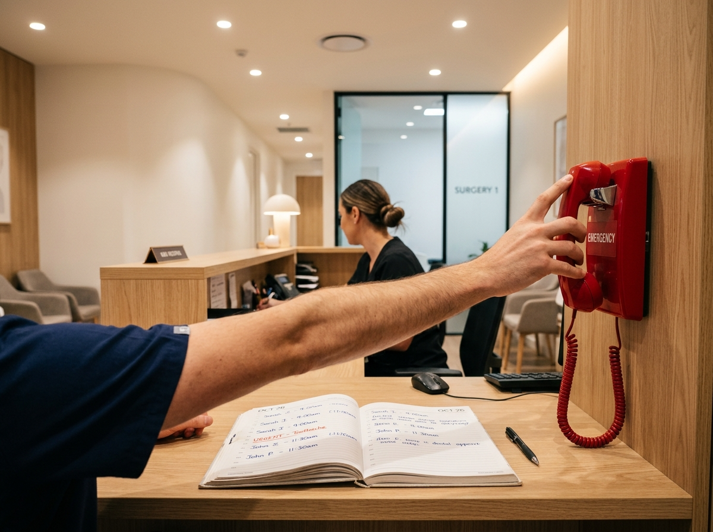

Benvenuto nel centro
La tua salute orale, la nostra passione
Un centro odontoiatrico nel cuore del quartiere Arcella a Padova, con un team di specialisti, tecnologie moderne e un laboratorio odontotecnico interno per trattamenti rapidi e su misura.
Benvenuto nel centro
Un centro odontoiatrico nel cuore del quartiere Arcella a Padova, con un team di specialisti, tecnologie moderne e un laboratorio odontotecnico interno per trattamenti rapidi e su misura.
Odontoiatri specializzati in diverse branche lavorano insieme per offrirti un percorso di cura completo e coordinato.
Il nostro laboratorio odontotecnico interno garantisce protesi e manufatti di alta qualità con tempi di consegna ridotti.
Uno studio moderno e accessibile, con ascensore e parcheggio nelle vicinanze, pensato per metterti a tuo agio.

Chi siamo
Il Centro Dentale Toti è un punto di riferimento per l'odontoiatria a Padova e nei comuni limitrofi. Lo studio, situato nel quartiere Arcella, offre un ventaglio completo di trattamenti — dall'implantologia all'ortodonzia, dalla prevenzione all'estetica dentale — con un'attenzione particolare alla qualità dei materiali e al comfort del paziente.
Un elemento distintivo del centro è la presenza di un laboratorio odontotecnico interno, che consente la produzione diretta di protesi e manufatti, garantendo un controllo costante sulla qualità e una riduzione dei tempi di attesa.
Scopri di piùI nostri servizi
Dall'implantologia all'ortodonzia, dall'igiene allo sbiancamento: ogni trattamento è eseguito da specialisti dedicati con materiali certificati e tecnologie all'avanguardia.

Sostituzione dei denti mancanti con impianti in titanio biocompatibile per un sorriso stabile e naturale.
Approfondisci
Correzione dell'allineamento dentale con apparecchi tradizionali e allineatori trasparenti per adulti e ragazzi.
Approfondisci
Sedute di igiene professionale e programmi di prevenzione personalizzati per mantenere gengive e denti sani.
Approfondisci
Trattamenti professionali di sbiancamento e faccette per un sorriso più luminoso e armonioso.
Approfondisci
Otturazioni estetiche, ricostruzioni e trattamenti canalari per preservare i denti naturali il più a lungo possibile.
Approfondisci
Dolore acuto, trauma o frattura? Contattaci per un appuntamento urgente nella stessa giornata.
ApprofondisciCome funziona
Telefona al 049 202 3691 per fissare un appuntamento nell'orario più comodo per te.
Un colloquio conoscitivo e un esame clinico accurato per comprendere le tue esigenze.
Ti presentiamo un piano di trattamento chiaro, con tempi e opzioni personalizzate.
Procediamo con le cure concordate, monitorando ogni fase per garantire il miglior risultato.
Dove trovarci
Via Lucindo Faggin, 5
35135 Padova (PD) – Quartiere Arcella
Lunedì – Venerdì: 9:00–19:00 (orario continuato)
Sabato e Domenica: chiuso